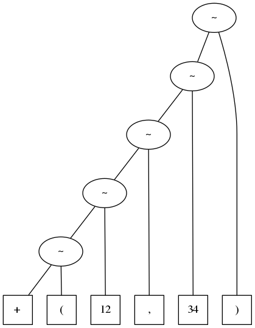
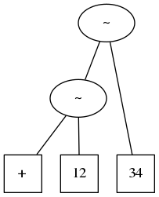

Scalaで言語処理
Table of Contents
1 概要
Scalaのparser combinatorの機能を学び，電卓を作成する．
以下は，作成中である．
1.1 注意
本Webページの作成には Emacs org-mode を用い， 数式等の表示は MathJax を用いています． IEでは正しく表示されないことがあるため， Firefox, Safari等のWebブラウザでJavaScriptを有効にしてお使いください． また org-info.js を利用しており， 「m」キーをタイプするとinfoモードでの表示になります． 利用できるショートカットは「?」で表示されます．
2 正規表現
Scalaプログラムでの正規表現 (regular expressions)は，与えられた文字列が正規表現で指定した パターンにマッチするかどうかを調べるために用いられる． なお，正規表現は，形式言語理論の正規言語 (regular languages)， すなわち有限オートマトン (finite automata)に対応している．
- 参考リンク: Wikipedia: 正規表現
例えば，正規表現 w* は文字 w を0回以上繰り返したパターンを表しており，
空文字列および w, ww, www, wwww などにマッチする．
Scalaでの実行例は以下のようになる．
scala> "www".matches("w*") res: Boolean = true scala> "vvv".matches("w*") res: Boolean = false
同様に，正規表現 w+ は文字 w を1回以上繰り返したパターンを表す．
scala> "www".matches("w+") res: Boolean = true scala> "".matches("w+") res: Boolean = false
複数の文字列の可能性があるパターンは \((r_1|r_2|\cdots|r_n)\) のように表す．
例えば (A|T|G|C)+ は， A または T または G または C の文字を1回以上繰り返したパターンである．
scala> "ATTACCA".matches("(A|T|G|C)+") res: Boolean = true
上の例は， [ATGC]+ と表すこともできる．
\([c_1c_2\cdots c_n]\) は，いずれかの文字 \(c_i\) と一致するパターンを表す．
scala> "ATTACCA".matches("[ATGC]+") res: Boolean = true
正規表現 \([c_1c_2\cdots c_n]\) で，
[0123456789] のように選択肢の文字の文字コードが連続している場合には，
[0-9] のように文字の範囲を用いて記述できる．
例えば [0-9] は10進表記の1桁とマッチし， [0-9a-fA-F] は16進表記の1桁とマッチする．
scala> "2018".matches("[0-9]+") res: Boolean = true scala> "7E2".matches("[0-9a-fA-F]+") res: Boolean = true
さらに [0-9] は \d と記述できる．
ただし，バックスラッシュはScalaも文字列記法中でエスケープ文字にあたるため，
Scalaプログラム中では "\\d" のように，バックスラッシュを2つ書く必要がある．
あるいは，エスケープ文字を無効にした文字列表記を用いて """\d""" と記述する．
scala> "2018".matches("\\d+") res: Boolean = true scala> "2018".matches("""\d+""") res: Boolean = true scala> "7E2".matches("""[\da-fA-F]+""") res: Boolean = true
パターン \(r?\) は \(r\) または空とマッチする記法である．
例えば -? は，文字列 - または空文字列とマッチする．
したがって，負の数を含む整数の10進表記とマッチする正規表現として -?\d+ が利用できる．
scala> "-2018".matches("""-?\d+""") res: Boolean = true
正規表現には，他にも様々な表現方法があるが，とりあえず以上で説明を終える． Scalaで利用できる正規表現の詳細は，以下のページなどを参考にされたい．
2.1 練習問題
- 正規表現「
(A*|T*|G*|C*)」は，どのような文字列にマッチするか．- (解答例)
-
空文字列,
A,T,G,C,AA,TT,GG,CC,AAA,TTT,GGG,CCCなど．
- 正規表現「
(A*|T*|G*|C*)+」は，どのような文字列にマッチするか．- (解答例)
-
正規表現「
(A|T|G|C)*」と同じ文字列にマッチする．
A,T,G,Cの文字だけからなる空でない文字列で，長さが3の倍数のものとマッチする正規表現は何か．- (解答例)
-
例えば「
([ATGC][ATGC][ATGC])+」である． 繰り返しを表す記法 \(\{m\}\) を用いれば，「([ATGC]{3})+」と書ける．
- 正規表現「
\d+」は007など，先頭に余分な0がある場合にもマッチしてしまう． これを避けるには，どのような正規表現を用いれば良いか．- (解答例)
-
「
[1-9]\d*」で良さそうだが，0とマッチしない．scala> "0".matches("""[1-9]\d*""") res: Boolean = false
したがって「
(0|[1-9]\d*)」などとすれば良い．scala> "0".matches("""(0|[1-9]\d*)""") res: Boolean = true
- 正規表現「
-?\d+」は，先頭に余分な0がある場合にもマッチするだけでなく，-0にもマッチしてしまう． これを避けるには，どのような正規表現を用いれば良いか．- (解答例)
-
「
(0|-?[1-9]\d*)」などとすれば良い．
3 文脈自由文法とEBNF
電卓で用いる数式の構文 (syntax)などは， 形式文法 (formal grammar)の一種である文脈自由文法 (context free languages)を用いて定義することができる． 文脈自由文法による文法定義には， バッカス・ナウア記法 (Backus-Naur Form; BNF)を拡張したEBNFが用いられることが多い． EBNFは，対象言語 (object language)の文法を定義する言語であるから， メタ言語 (metalanguage)と呼ばれることがある．
- 参考リンク: Wikipedia: 形式文法
- 参考リンク: Wikipedia: 文脈自由文法
- 参考リンク: Wikipedia: バッカス・ナウア記法
- 参考リンク: Wikipedia: EBNF
- 参考リンク: Wikipedia: メタ言語
EBNFの具体的な書き方には，様々な流儀があるが，ここでは以下のように書くことにする．
- 終端記号 (terminal symbols; 対象言語の文字列):
"a"のようにダブル・クォーテーションでくくって表す． - 非終端記号 (nonterminal symbols; EBNFの記号): expression のようにイタリック文字で表記し，構文カテゴリーを表す．
- 構文規則 (syntax rules): 以下のような形式で表し，非終端記号で表される文字列集合を定義する． \begin{align*} \mbox{非終端記号} & ::= \mbox{定義} \end{align*}
また，定義中に以下のような記法を使用する．
| EBNFでの記法 | 説明 |
|---|---|
| \(\alpha_1\ \alpha_2\) | \(\alpha_1\) と \(\alpha_2\) の連結 |
| \(\alpha_1 \mid \alpha_2\) | \(\alpha_1\) または \(\alpha_2\) |
| \(\{\ \alpha\ \}\) | \(\alpha\) の0回以上の繰り返し |
| \([\ \,\alpha\ \,]\) | \(\alpha\) または空 |
| \((\ \alpha\ )\) | \(\alpha\) のグループ化 |
例えば，以下は10進数字を表す構文カテゴリー digit と， 10進表記の整数を表す構文カテゴリー integer を定義している． \begin{align*} \textit{digit} & ::=\ \mbox{"0"}\ \mid\ \mbox{"1"}\ \mid\ \mbox{"2"}\ \mid\ \mbox{"3"}\ \mid\ \mbox{"4"}\ \mid\ \mbox{"5"}\ \mid\ \mbox{"6"}\ \mid\ \mbox{"7"}\ \mid\ \mbox{"8"}\ \mid\ \mbox{"9"} \\ \textit{integer} & ::=\ [\ \mbox{"-"}\ ]\ \textit{digit}\ \{\ \textit{digit}\ \} \end{align*}
4 前置記法の電卓
4.1 構文定義
まず，文法が簡単な前置記法 (prefix notation)の電卓を考える．
すなわち，加減乗除算を
+(x,y), -(x,y), *(x,y), /(x,y)
のように記述する記法である．
この記法だと，例えば \(3+1-4*2\) は -(+(3,1),*(4,2)) と記述する．
この構文は，EBNFで以下のように定義できる．
\begin{align*} \textit{expr} & ::=\ \textit{integer}\ \mid\ \textit{func}\ \mbox{"("}\ \textit{expr}\ \mbox{","}\ \textit{expr}\ \mbox{")"} \\ \textit{func} & ::=\ \mbox{"+"}\ \mid\ \mbox{"-"}\ \mid\ \mbox{"*"}\ \mid\ \mbox{"/"} % \end{align*}Scalaのparser combinatorを用いると，EBNFと同様の記法で構文を定義し， 与えられた文字列の構文解析を実現できる． ただ，すべての構文定義を実現できるわけではない． Scalaのparser combinatorは， トップダウン型の再帰下降構文解析 (recursive descent parsing)のため 左再帰 (left recursive)な構文規則は利用できない． しかし，それと同等の記述が可能であり，実用上は問題ない．
- 参考リンク: scala.util.parsing.combinator.Parsers
- 参考リンク: Programming in Scala, First Edition: 31. Combinator Parsing
- 参考リンク: Wikipedia: Parser combinator
- 参考リンク: Wikipedia: 再帰下降構文解析
- 参考リンク: Wikipedia: 左再帰
EBNFで，具体的に構文を定義しようとすると，空白の取り扱いが面倒になる． 数の文字列の途中に空白文字は許したくないが，コンマやカッコの前後には空白文字を許したい． これを，EBNFで正しく定義しようとすると，たとえば以下のようになり，無駄に複雑だ． \begin{align*} \textit{expr} & ::=\ \textit{spaces}\ (\ \textit{integer}\ \mid\ \textit{func}\ \mbox{"("}\ \textit{expr}\ \mbox{","}\ \textit{expr}\ \mbox{")"}\ )\ \textit{spaces} \\ \textit{func} & ::=\ \textit{spaces}\ (\ \mbox{"+"}\ \mid\ \mbox{"-"}\ \mid\ \mbox{"*"}\ \mid\ \mbox{"/"}\ )\ \textit{spaces} \\ \textit{spaces} & ::=\ \{\ \mbox{" "}\ \} \end{align*} そこで，数や変数名など途中に空白文字を許さない構文単位を トークン (token)と呼び， トークンとトークンの間には自動的に空白を許すことにすれば便利だ．
scala.util.parsing.combinator.JavaTokenParsers では， 以下の関数が事前に定義されており，トークンとして利用可能である．
| 関数名 | トークンの種類 | 例 |
|---|---|---|
ident | 変数名などの識別名 | x, x1, 名前 など |
wholeNumber | 整数 | 12, -34 など |
decimalNumber | 符号なし小数 | 12, 12.3, .14 など |
floatingPointNumber | 浮動小数点数 | 3.14, 6.02e23 など |
stringLiteral | 文字列 | "abc", "\\d" など |
なお JavaTokenParsers は scala.util.parsing.combinator.RegexParsers のサブクラスになっており， 正規表現を用いて新たなトークンを定義することもできる．
前置記法の電卓を JavaTokenParsers で定義したプログラムは， 以下のように書ける(CalcP0.scala)．
import scala.util.parsing.combinator._ object CalcP0 extends JavaTokenParsers { def expr: Parser[Any] = integer | func ~ "(" ~ expr ~ "," ~ expr ~ ")" def func = "+" | "-" | "*" | "/" def integer = wholeNumber }
関数exprが前置記法の式の パーサ (parser; 構文解析器)である． そして，関数funcが演算子の部分をパースするパーサ， 関数integerが整数の部分をパースするパーサとなっている．
関数exprの定義部分を見ればわかるように，
「または」はEBNFと同様に "|" を用いているが，「連結」には "~" を用いている．
その他の記法は以下のように対応しており，
Scalaのparser combinatorで，EBNFの記法をほぼ自然に記述できることがわかる．
| Scalaでの記法 | EBNFでの記法 | 説明 |
|---|---|---|
| \(\alpha_1\) ~ \(\alpha_2\) | \(\alpha_1\ \alpha_2\) | \(\alpha_1\) と \(\alpha_2\) の連結 |
| \(\alpha_1 \mid \alpha_2\) | \(\alpha_1 \mid \alpha_2\) | \(\alpha_1\) または \(\alpha_2\) |
rep( \(\alpha\) ) | \(\{\ \alpha\ \}\) | \(\alpha\) の0回以上の繰り返し |
opt( \(\alpha\) ) | \([\ \,\alpha\ \,]\) | \(\alpha\) または空 |
( \(\alpha\) ) | \((\ \alpha\ )\) | \(\alpha\) のグループ化 |
このプログラムは以下のようにすればScala REPL内から実行できるようになる (Scalaを実行する同じフォルダ中にCalcP0.scalaが保存しておくこと)．
$ scala scala> :load CalcP0.scala
まず，CalcP0オブジェクト中で定義されている関数を直接実行できるようにimport命令を実行する．
scala> import CalcP0._
なお，import命令の実行は，プログラムをloadするたびに行う必要がある点に注意すること．
parseAll関数を用いると，与えた文字列に対して 構文解析 (parsing)を実行することができる．
例えば，以下は +(12,34) を expr として構文解析した結果である．
scala> parseAll(expr, "+(12,34)")
res: CalcP0.ParseResult[Any] = [1.9] parsed: (((((+~()~12)~,)~34)~))
出力中の [1.9] は，文字列 +(12,34) の1文字目から9文字目の前 (つまり最終文字)まで
構文解析できたことを表し，
(((((+~()~12)~,)~34)~)) が構文解析の結果として得られた 構文木 (parse tree)を文字列表示したものである．
この表示は，非常にわかりにくいが，以下のような構造になっている (わかるだろうか?)．
((((("+" ~ "(") ~ "12") ~ ",") ~ "34") ~ ")")
これを構文木として図示すると以下のようになる(トークンは四角の箱で表されている)．

"+", "(", "12", ",", "34", ")" の各トークンに対し，
2項演算子 "~" で左結合的に対が作成されていることがわかる．
このように，得られた構文木中に意味的には不要なトークン("(", ",", ")")が
含まれており，複雑になっている．
Scalaのparser combinatorには，不要な構造を削除する演算が用意されている．
演算子 "~" の代わりに "~>" を用いると左側の構文解析結果が構文木から削除され，
"<~" を用いると右側の構文解析結果が構文木から削除される．
以下のプログラム CalcP1.scala は， "<~" を用いて不要なトークンを結果の構文木から省いている．
import scala.util.parsing.combinator._ object CalcP1 extends JavaTokenParsers { def expr: Parser[Any] = integer | (func <~ "(") ~ (expr <~ ",") ~ (expr <~ ")") def func = "+" | "-" | "*" | "/" def integer = wholeNumber }
実行するには，以下のように入力する．
$ scala scala> :load CalcP1.scala scala> import CalcP1._ scala> parseAll(expr, "+(12,34)") res: CalcP1.ParseResult[Any] = [1.9] parsed: ((+~12)~34)
表示された結果は，以下のような構文木を表している．

4.2 練習問題
- CalcP1.scala を修正し，整数でなく浮動小数点数が利用できるようにせよ．
- (解答例)
-
例えば以下のように修正する(CalcP1float.scala)．
def expr: Parser[Any] = number | (func <~ "(") ~ (expr <~ ",") ~ (expr <~ ")") def func = "+" | "-" | "*" | "/" def number = floatingPointNumber
- CalcP1.scala を修正し
"-(12)"や"abs(-34)"などの1引数の演算や関数を記述できるようにせよ．- (解答例)
-
例えば以下のように修正する(CalcP1unary.scala)．
def expr: Parser[Any] = integer | (func1 <~ "(") ~ (expr <~ ")") | (func2 <~ "(") ~ (expr <~ ",") ~ (expr <~ ")") def func1 = "-" | ident def func2 = "+" | "-" | "*" | "/" | ident def integer = wholeNumber
ここでは，1引数の関数名として
identを許しているから，absだけでなく任意の識別名が利用可能となっている． また，2引数の関数名としても任意の識別名が利用できるようにしている．
- 以下の関数
hexnumを用いると#7E2などの16進表記の整数をトークンとして利用できる．def hexnum = "#" ~> "[0-9a-fA-F]+".r
CalcP1.scala を修正し16進表記の整数を利用できるようにせよ．
- (解答例)
-
例えば CalcP1hex.scala のように修正する．
4.3 構文解析結果の利用
ここまでで，前置記法の式の構文解析が実現できた． Scalaのparser combinatorでは，構文解析結果に対する処理を記述することもできる． その機能を用いて，前置記法の電卓を実現しよう． なお，ここでは計算結果は整数とし，浮動小数点の電卓の実現は練習問題とする．
CalcP1.scala の expr の定義を見ると
def 関数名: Parser[Any] = 構文定義1 | 構文定義2 | ... | 構文定義n
のようになっている． これを，Scalaで整数を表すデータ型Intを返すようにするには， 以下のように記述する(わかりやすく改行を追加している)．
def 関数名: Parser[Int] = 構文定義1 ^^ Intを返す関数1 | 構文定義2 ^^ Intを返す関数2 | ... 構文定義n ^^ Intを返す関数n
ここで「Intを返す関数i」は，「構文定義i」の構文解析結果を引数としてIntの結果を返す関数である．
expr の「構文定義1」は integer で，これは構文解析結果として文字列 (String)を返す．
したがって「Intを返す関数1」としては，10進整数の文字列表記からその値を求める関数を
記述すれば良い(データ型は String => Int)．
Scalaの匿名関数 (anonymous function)の機能を用いれば，
10進整数の文字列表記からその値を求める関数は (s => s.toInt) や
{ s => s.toInt } と記述できる．
あるいは，さらに引数を省略して (_.toInt) や { _.toInt } と記述しても良い．
すなわち，以下のような記述となる．
def expr: Parser[Int] = integer ^^ { _.toInt } | (func <~ "(") ~ (expr <~ ",") ~ (expr <~ ")") ^^ { t => ... }
expr の「構文定義2」は (func <~ "(") ~ (expr <~ ",") ~ (expr <~ ")") で，
(("+" ~ 12) ~ 34) などの構造が返ってきて，
そのデータ型は ~[~[String,Int],Int] である．
データ構造 (x ~ y) の第一要素は ._1 のメソッドで，
第二要素は ._2 のメソッドで取り出すことができる．
つまり， t の値が (("+" ~ 12) ~ 34) の場合，
t._1._2 で12を， t._2 で34が得られる．
しかし，このように複雑な構造から必要なデータを取り出す場合，Scalaのmatch構文を用いることができる．
t match { case パターン1 => 処理1 case パターン2 => 処理2 ... case パターンn => 処理n }
この時，「パターン1」から順に t の構造とパターンマッチ (pattern matching)が行われ，
最初にマッチした「パターンi」に対して「処理i」が実行される．
expr の「構文定義2」は (func <~ "(") ~ (expr <~ ",") ~ (expr <~ ")") に対するパターンは，
f ~ x ~ y のように書けるから，以下のような記述となる．
def expr: Parser[Int] = integer ^^ { _.toInt } | (func <~ "(") ~ (expr <~ ",") ~ (expr <~ ")") ^^ { t => t match { case f ~ x ~ y => ... }}
構文定義中の func の部分が変数 f に，
最初の expr の部分が変数 x に，
次の expr の部分が変数 y に代入される．
なお， f のデータ型は String ， x と y のデータ型は Int である．
f に代入される値は "+", "-", "*", "/" のいずれかだ．
したがって，パターンを以下のように4通り記述すれば，よりわかりやすくなる．
def expr: Parser[Int] = integer ^^ { _.toInt } | (func <~ "(") ~ (expr <~ ",") ~ (expr <~ ")") ^^ { t => t match { case "+" ~ x ~ y => ... case "-" ~ x ~ y => ... case "*" ~ x ~ y => ... case "/" ~ x ~ y => ... }}
また { t => t match { ... } } は，単に { ... } と省略して書くことができる．
def expr: Parser[Int] = integer ^^ { _.toInt } | (func <~ "(") ~ (expr <~ ",") ~ (expr <~ ")") ^^ { case "+" ~ x ~ y => ... case "-" ~ x ~ y => ... case "*" ~ x ~ y => ... case "/" ~ x ~ y => ... }
加減乗除の各演算に対し，値を計算する処理を付け加えると以下のようになる (CalcP2.scala)．
import scala.util.parsing.combinator._ object CalcP2 extends JavaTokenParsers { def expr: Parser[Int] = integer ^^ { _.toInt } | (func <~ "(") ~ (expr <~ ",") ~ (expr <~ ")") ^^ { case "+" ~ x ~ y => x + y case "-" ~ x ~ y => x - y case "*" ~ x ~ y => x * y case "/" ~ x ~ y => x / y } def func = "+" | "-" | "*" | "/" def integer = wholeNumber }
以下は，実行例である．
scala> :load CalcP2.scala scala> import CalcP2._ scala> parseAll(expr, "+(*(1,2), *(3,4))") res: CalcP2.ParseResult[Int] = [1.18] parsed: 14
4.4 練習問題
- CalcP2.scala を修正し，整数でなく浮動小数点数が利用できるようにせよ．
結果が
Doubleとなることに注意すること．- (解答例)
-
例えば CalcP2float.scala のように修正する．
- さらに修正し
"-(0.1)","abs(-2.3)","max(4, 5)"などの演算および関数が利用できるようにせよ． なお，これらの関数はmath.abs(-2.3),math.max((4, 5)などとすれば計算できる． 使用できる関数については scala.math パッケージを参照のこと．- (解答例)
-
例えば CalcP2float2.scala のように修正する．
4.5 複数引数への拡張
さらに， +(x1, x2, …, xn) のように，複数の引数を許すようにしよう (n ≥ 1)． この構文は，EBNFで以下のように定義できる． \begin{align*} \textit{expr} & ::=\ \textit{integer}\ \mid\ \textit{func}\ \mbox{"("}\ \textit{expr}\ \{\ \mbox{","}\ \textit{expr}\ \}\ \mbox{")"} \end{align*} ここで \(\{\ \alpha\ \}\) は \(\alpha\) の0回以上の繰り返しを表している．
これは，Scalaのparser combinatorを用いれば以下のように記述できる (CalcP3.scala)．
import scala.util.parsing.combinator._ object CalcP3 extends JavaTokenParsers { def expr: Parser[Any] = integer | (func <~ "(") ~ expr ~ (rep("," ~> expr) <~ ")") def func = "+" | "-" | "*" | "/" | ident def integer = wholeNumber }
rep("," ~> expr) が \(\{\ \mbox{","}\ \textit{expr}\ \}\) に対応している．
また，任意の識別子を関数名として利用できるよう， func の定義に ident を追加している．
このプログラムを +(1,2,3,4) に対して実行すると以下の結果になる．
scala> :load CalcP3.scala scala> import CalcP3._ scala> parseAll(expr, "+(1,2,3,4)") res: CalcP3.ParseResult[Any] = [1.11] parsed: ((+~1)~List(2, 3, 4))
rep("," ~> expr) の部分に対応する結果が整数のリスト List(2,3,4) となっていることがわかる．
したがって，整数の結果を計算するプログラムは以下のように書ける．
def expr: Parser[Int] = integer ^^ { _.toInt } | (func <~ "(") ~ expr ~ (rep("," ~> expr) <~ ")") ^^ { case "+" ~ x ~ ys => ... case "-" ~ x ~ ys => ... case "*" ~ x ~ ys => ... case "/" ~ x ~ ys => ... }
+(1,2,3,4) の場合，変数 x に整数 1 が代入され，
変数 ys に整数のリスト List(2,3,4) が代入される．
したがって，結果は x + ys.sum とすれば良い
(あるいは (x +: ys).sum でも良い)．
-(1,2,3,4) の場合は \(1-2-3-4\) を表すと考えれば，
同様に結果は x - ys.sum で良い．
また *(1,2,3,4) の場合は \(1\times 2\times 3\times 4\) を表すと考えられるから，
結果は x * ys.product となり，
/(1,2,3,4) の場合も同様に x / ys.product で良いだろう．
しかし，引数の個数が1つの場合に問題が生じる．
+(1), -(1), *(1), /(1) のいずれの場合も結果が 1 となる．
+, *, / についてはこの結果でも良いが，
-(1) の場合には -1 を結果とすべきだろう．
これは，以下のようにプログラムすれば解決できる (CalcP4.scala)．
import scala.util.parsing.combinator._ object CalcP4 extends JavaTokenParsers { def expr: Parser[Int] = integer ^^ { _.toInt } | (func <~ "(") ~ expr ~ (rep("," ~> expr) <~ ")") ^^ { case "+" ~ x ~ ys => x + ys.sum case "-" ~ x ~ Nil => - x case "-" ~ x ~ ys => x - ys.sum case "*" ~ x ~ ys => x * ys.product case "/" ~ x ~ ys => x / ys.product } def func = "+" | "-" | "*" | "/" | ident def integer = wholeNumber }
ys の箇所が空リスト Nil になる場合のcaseパターンを追加している．
4.6 練習問題
- CalcP4.scala で
parseAll(expr, "abs(-1)")を実行するとどうなるか．- (解答例)
-
構文解析は成功しているが，その後の値の計算で， 対応するcaseパターンが存在しないため
scala.MatchErrorが表示される．
- CalcP4.scala を修正し
abs(x)でxの絶対値を計算するように拡張せよ．- (解答例)
-
以下の行を追加すれば良い．
case "abs" ~ x ~ Nil => math.abs(x)
- CalcP4.scala を修正し，結果が
IntでなくBigIntとなるようにせよ． またfact(x)でxの階乗を計算するようにせよ． なお，10進表記の文字列sについてBigInt(s)とすれば，BigIntに変換できる．- (解答例)
-
例えば CalcP4bigint.scala のように修正する．
5 課題1
以下からいくつかを選択し， Work1.scala に対して拡張を行うこと．
- xiすべての最大値を求める関数
max(x1, x2, ..., xn)を追加せよ．- (ヒント)
-
BigIntのリストysの最大値はys.maxで求めることができる．
- 正の整数xとyの最大公約数を求める関数
gcd(x, y)を追加せよ． 二つのBigIntの最小公倍数を求める方法については scala.math.BigInt を参照．- (ヒント)
-
BigIntのgcdメソッドを使用する．
- 正の整数xiすべての最大公約数を求める関数
gcd(x1, x2, ... xn)を追加せよ．- (ヒント)
-
BigIntのリストに対しreduceを用いると良い．
- 正の整数xiすべての最小公倍数を求める関数
lcm(x1, x2, ... xn)を追加せよ．- (ヒント)
-
xとyの最小公倍数を求める関数
lcm(x, y)をScalaプログラム中で以下のように定義し， xiのリストに対してreduceを用いる．def lcm(x: BigInt, y: BigInt) = ...
- n番目のフィボナッチ数を求める関数
fib(n)を追加せよ．- (ヒント)
-
Scalaで再帰プログラミング を参照し関数
fib(n)をoScalaプログラム中で定義する． なおBigIntの値xをIntに変換するにはx.toIntとする．
- 西暦y年 (y ≥ 1900) m月d日のユリウス日 (JDN)を求める関数
julius(y, m, d)を追加せよ． 今日のユリウス日から自分の誕生日のユリウス日を引けば，何日生きてきたかがわかる．- (ヒント)
-
ユリウス日 (JDN)の計算方法については Wikipedia: ユリウス通日 中の「グレゴリオ暦からの換算式」を参照． なお \((month - 3) \bmod 12\) の部分は
(month - 3) % 12として良い．
- n番目の素数を求める関数
prime(n)を追加せよ． ただし素数の値はIntの範囲内として良い．なお，1番目の素数は2である．- (ヒント)
-
Scalaで素数ものさしを探す を参照．
5.1 テスト方法
テスト用のデータ test1.txt を同じフォルダにダウンロードし， 以下のように実行するとテストを実施できる．
scala> :load Work1.scala scala> Work1.test
OKと表示された場合，構文解析に成功し，計算した結果が正しい．NGと表示された場合，構文解析に成功したが，計算結果が正しくない．ERRと表示された場合，構文解析でエラーが生じている．scala.MatchErrorなどと表示された場合は，プログラムの誤りである．
6 日本語での数表記が可能な電卓への拡張
"二千十八" など，日本語での数表記が可能な電卓へ拡張してみよう．
CalcP4.scala の expr の定義を変更し，
日本語表記の文字列に対し整数を返す関数 jint を追加する．
また，整数を Int でなく BigInt で表すように変更する．
def expr: Parser[BigInt] = integer ^^ { BigInt(_) } | jint | (func <~ "(") ~ expr ~ (rep("," ~> expr) <~ ")") ^^ { case "+" ~ x ~ ys => x + ys.sum case "-" ~ x ~ Nil => - x case "-" ~ x ~ ys => x - ys.sum case "*" ~ x ~ ys => x * ys.product case "/" ~ x ~ ys => x / ys.product }
まず "一" から "九" の一桁の表記を可能なプログラムを作成してみよう
(CalcPJ1.scala)．
プログラム中で jint1 は一桁の数を構文解析し BigInt の値を返す関数である．
import scala.util.parsing.combinator._ object CalcPJ1 extends JavaTokenParsers { def expr: Parser[BigInt] = integer ^^ { BigInt(_) } | jint | (func <~ "(") ~ expr ~ (rep("," ~> expr) <~ ")") ^^ { case "+" ~ x ~ ys => x + ys.sum case "-" ~ x ~ Nil => - x case "-" ~ x ~ ys => x - ys.sum case "*" ~ x ~ ys => x * ys.product case "/" ~ x ~ ys => x / ys.product } def func = "+" | "-" | "*" | "/" | ident def integer = wholeNumber def jint = jint1 def jint1 = "一" ^^ { _ => BigInt(1) } | "二" ^^ { _ => BigInt(2) } | "三" ^^ { _ => BigInt(3) } | "四" ^^ { _ => BigInt(4) } | "五" ^^ { _ => BigInt(5) } | "六" ^^ { _ => BigInt(6) } | "七" ^^ { _ => BigInt(7) } | "八" ^^ { _ => BigInt(8) } | "九" ^^ { _ => BigInt(9) } }
次に，これを "二十三" などの二桁の表記が可能なように拡張しよう．
二桁の数は "二十" や "十三" なども可能である．
つまり "二十三" での "二" や "三" の部分 (あるいは両方)が省略できる．
したがって，二桁以下の数を表す jint2 の構文は以下のように定義できる．
def jint2 = opt(jint1) ~ "十" ~ opt(jint1) | jint1
opt(jint1) は，空または jint1 を表している．
opt(jint1) に対する構文解析結果のデータ型は Option[BigInt] となり，
空の場合は None という値を持ち，
空でない場合は Some(x) という値を持つ (x は jint1 の結果)．
したがって，二桁以下の表記が利用できるプログラム CalcPJ2.scala は以下のようになる．
import scala.util.parsing.combinator._ object CalcPJ2 extends JavaTokenParsers { def expr: Parser[BigInt] = integer ^^ { BigInt(_) } | jint | (func <~ "(") ~ expr ~ (rep("," ~> expr) <~ ")") ^^ { case "+" ~ x ~ ys => x + ys.sum case "-" ~ x ~ Nil => - x case "-" ~ x ~ ys => x - ys.sum case "*" ~ x ~ ys => x * ys.product case "/" ~ x ~ ys => x / ys.product } def func = "+" | "-" | "*" | "/" | ident def integer = wholeNumber def jint = jint2 def jint1 = "一" ^^ { _ => BigInt(1) } | "二" ^^ { _ => BigInt(2) } | "三" ^^ { _ => BigInt(3) } | "四" ^^ { _ => BigInt(4) } | "五" ^^ { _ => BigInt(5) } | "六" ^^ { _ => BigInt(6) } | "七" ^^ { _ => BigInt(7) } | "八" ^^ { _ => BigInt(8) } | "九" ^^ { _ => BigInt(9) } def jint2 = jint1 | (opt(jint1) <~ "十") ~ opt(jint1) ^^ { case None ~ None => BigInt(10) case Some(x1) ~ None => 10 * x1 case None ~ Some(x2) => 10 + x2 case Some(x1) ~ Some(x2) => 10 * x1 + x2 } }
以下は，実行例である．
scala> :load CalcPJ2.scala scala> import CalcPJ2._ scala> parseAll(expr, "+(一,二,三,四)") res: CalcPJ2.ParseResult[BigInt] = [1.11] parsed: 10
ただし， jint2 の構文を以下のように定義すると "二十" の構文解析でエラーになってしまう．
def jint2 = jint1 | opt(jint1) ~ "十" ~ opt(jint1)
scala> parseAll(expr, "二十")
res: CalcPJ2.ParseResult[BigInt] =
[1.2] failure: end of input expected
二十
^
これは "二十" の構文解析で， jint1 の規則の適用が "二" の部分に対して先に成功してしまい，
opt(jint1) ~ "十" ~ opt(jint1) の規則へ進まないためである．
したがって，文法定義の際には，このような点に注意しなければならない．
さらに，三桁の "九百九十九" 以下の値まで利用できる プログラム CalcPJ3.scala は以下のようになる．
import scala.util.parsing.combinator._ object CalcPJ3 extends JavaTokenParsers { def expr: Parser[BigInt] = integer ^^ { BigInt(_) } | jint | (func <~ "(") ~ expr ~ (rep("," ~> expr) <~ ")") ^^ { case "+" ~ x ~ ys => x + ys.sum case "-" ~ x ~ Nil => - x case "-" ~ x ~ ys => x - ys.sum case "*" ~ x ~ ys => x * ys.product case "/" ~ x ~ ys => x / ys.product } def func = "+" | "-" | "*" | "/" | ident def integer = wholeNumber def jint = jint3 def jint1 = "一" ^^ { _ => BigInt(1) } | "二" ^^ { _ => BigInt(2) } | "三" ^^ { _ => BigInt(3) } | "四" ^^ { _ => BigInt(4) } | "五" ^^ { _ => BigInt(5) } | "六" ^^ { _ => BigInt(6) } | "七" ^^ { _ => BigInt(7) } | "八" ^^ { _ => BigInt(8) } | "九" ^^ { _ => BigInt(9) } def jint2 = (opt(jint1) <~ "十") ~ opt(jint1) ^^ { case None ~ None => BigInt(10) case Some(x1) ~ None => 10 * x1 case None ~ Some(x2) => 10 + x2 case Some(x1) ~ Some(x2) => 10 * x1 + x2 } | jint1 def jint3 = (opt(jint1) <~ "百") ~ opt(jint2) ^^ { case None ~ None => BigInt(100) case Some(x1) ~ None => 100 * x1 case None ~ Some(x2) => 100 + x2 case Some(x1) ~ Some(x2) => 100 * x1 + x2 } | jint2 }
7 課題2
以下からいくつかを選択し， Work2.scala に対して拡張を行うこと．
- "九千九百九十九" 以下の値を利用できるようにせよ．
- (ヒント)
-
以下の構文定義を利用する．
def jint4 = (opt(jint1) <~ "千") ~ opt(jint3) | jint3
- "九千九百九十九万九千九百九十九" 以下の値を利用できるようにせよ．
- (ヒント)
-
以下の構文定義を利用する．
def jintMan = (jint4 <~ "万") ~ opt(jint4) | jint4
- "九千九百九十九億九千九百九十九万九千九百九十九" 以下の値を利用できるようにせよ．
- (ヒント)
-
以下の構文定義を利用する．
def jintOku = (jint4 <~ "億") ~ opt(jintMan) | jintMan
- さらに "兆", "京", "垓" などを利用できるようにせよ (Wikipedia: 命数法)．
- (ヒント)
-
"兆" については以下の構文定義を利用する．
def jintCho = (jint4 <~ "兆") ~ opt(jintOku) | jintOku
- "きゅうひゃくきゅうじゅうきゅう" など，ひらがなの表記を利用できるようにせよ．
- (ヒント)
-
jint1,jint2などに規則を追加すれば良い．
"和(1,2,3,4)など，日本語で加減乗除を記述できるようにせよ． 関数名は "和", "差", "積", "商" とすること．- (ヒント)
-
exprに規則を追加すれば良い．
#7E2などの16進表記が可能になるようにせよ．- (ヒント)
-
16進表記を許す構文規則については，以前の練習問題を参照．
BigInt("7E2", 16)などとすれば，16進表記の文字列をBigIntに変換できる．
"12kで 12000，"12M"で 12000000 などを表せるようにせよ (Wikipedia: SI接頭辞)．- (ヒント)
-
以下の構文定義を利用する．
def expr: Parser[All] = integer ~ ("k" | "M" | "G" | "T" | "P") | integer | jint | (func <~ "(") ~ expr ~ (rep("," ~> expr) <~ ")")
7.1 テスト方法
テスト用のデータ test2.txt を同じフォルダにダウンロードし， 以下のように実行するとテストを実施できる．
scala> :load Work2.scala scala> Work2.test
OKと表示された場合，構文解析に成功し，計算した結果が正しい．NGと表示された場合，構文解析に成功したが，計算結果が正しくない．ERRと表示された場合，構文解析でエラーが生じている．scala.MatchErrorなどと表示された場合は，プログラムの誤りである．
8 発展課題
Work1.scala, Work2.scala と同様に Work3.scala を作成し，自由に拡張を行え．
ただし，テスト用のデータ test3.txt を作成し Work3.test でテストを実行できるようにせよ．
以下は，拡張の例である．
- 以下の構文規則を利用し，
3+1*4などの挿入記法での通常の数式表記を可能にする．def expr: Parser[Any] = opt("-") ~ term ~ rep("+" ~ term | "-" ~ term) def term: Parser[Any] = factor ~ rep("*" ~ factor | "/" ~ factor) def factor: Parser[Any] = integer | "(" ~> expr <~ ")" | (ident <~ "(") ~ expr ~ (rep("," ~> expr) <~ ")")
"一足す二引く三"など，日本語を用いた挿入記法での表記を可能にする．"MMXVIII"など，ローマ数字の表記を可能にする (Wikipedia: ローマ数字)．- "nine hundreds and ninety nine" など，英語での表記を可能にする．
- 複素数の計算を行う電卓を作成する．
- 有理数 (分数)の計算を行う電卓を作成する．
- ベクトルや行列の計算を行う電卓を作成する．